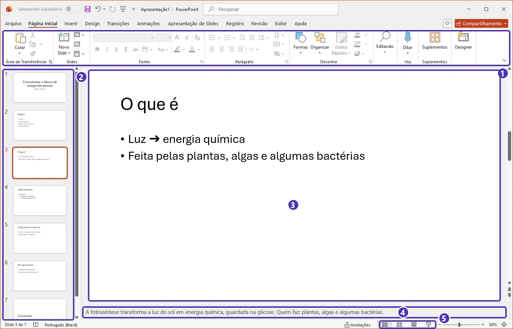
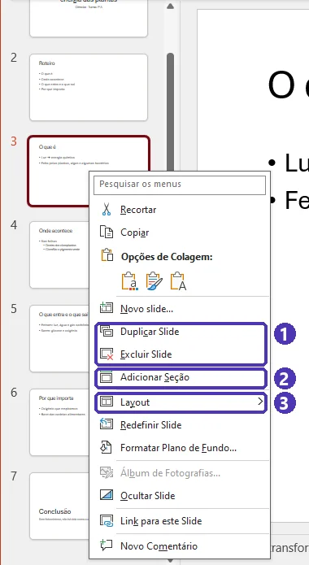
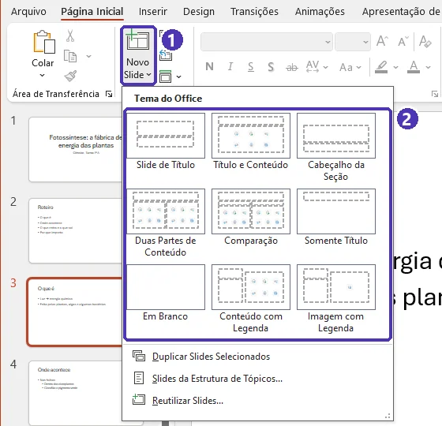
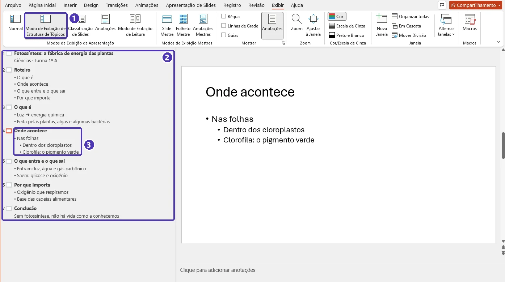

01 — Primeiros passos: slides, layouts e texto¶
Curso: Pacote Office
Módulo: 03 — PowerPoint
Tempo estimado: 1 h 30 min
Objetivos¶
Ao final desta aula, você será capaz de:
- Reconhecer as partes da tela do PowerPoint e os modos de exibição.
- Criar, duplicar, reordenar e excluir slides, escolhendo o layout certo para cada um.
- Escrever nos espaços reservados e organizar tópicos em níveis.
- Montar o roteiro da apresentação antes de pensar no visual.
- Salvar em
.pptxe exportar em PDF.
Pré-requisitos¶
- Saber usar mouse e teclado e salvar arquivos em pastas.
- Ter acesso ao PowerPoint do Microsoft 365 (no computador ou em office.com com o e-mail da escola).
A tela do PowerPoint¶
Ao abrir uma Apresentação em Branco, você vê:
| Parte | Para que serve |
|---|---|
| Painel de miniaturas | À esquerda. Todos os slides em ordem: clique para abrir, arraste para mudar de lugar. |
| Área do slide | No centro. É onde você edita o slide aberto. |
| Anotações | Embaixo do slide (se não aparecer, clique em Anotações na barra de status). O que você escreve aqui não aparece para a plateia — é a sua “cola” na hora de apresentar. |
| Faixa de opções | As abas Página Inicial, Inserir, Design, Transições, Animações, Apresentação de Slides, Revisão e Exibir. |
| Barra de status | Embaixo: número do slide, botões dos modos de exibição e zoom. |


Modos de exibição¶
Na aba Exibir (ou nos botões da barra de status):
- Normal: o modo de trabalho, com miniaturas, slide e anotações.
- Classificação de Slides: todos os slides lado a lado, ótimo para ver a sequência e reorganizar.
- Modo de Exibição de Leitura: apresenta dentro da janela, sem tela cheia — bom para revisar.
- Apresentação de Slides: tela cheia, como a plateia vai ver (
F5).
Slides e layouts¶
- Novo slide: Página Inicial ➔ Novo Slide — clique na setinha do botão para escolher o layout.
- Duplicar: botão direito na miniatura ➔ Duplicar Slide. Ótimo para manter o mesmo formato.
- Mover: arraste a miniatura no painel (ou use a Classificação de Slides).
- Excluir: selecione a miniatura e aperte
Delete. - Trocar o layout de um slide pronto: Página Inicial ➔ Layout.


| Layout | Quando usar |
|---|---|
| Slide de Título | A capa: título da apresentação, seu nome, turma e data |
| Título e Conteúdo | O mais usado: um título e tópicos, imagem, tabela ou gráfico |
| Cabeçalho da Seção | Separar as partes da apresentação (“Parte 2 — Resultados”) |
| Duas Partes de Conteúdo / Comparação | Comparar duas coisas lado a lado |
| Somente Título / Em Branco | Slides com uma imagem grande ou um gráfico |


Escreva dentro dos espaços reservados
As caixas pontilhadas (“Clique para adicionar um título”) são os espaços reservados. Escreva neles, em vez de criar caixas de texto soltas: assim o texto segue o tema, aparece no modo Estrutura de Tópicos e é lido pelos leitores de tela.
Texto e tópicos¶
- Em um espaço de conteúdo, cada
Entercria um tópico novo. Tabdesce um nível (subtópico);Shift + Tabsobe um nível.- Formatação de fonte e parágrafo como no Word: grupo Fonte e grupo Parágrafo da Página Inicial.
- Texto grande demais para a caixa? O PowerPoint diminui a fonte sozinho. É um aviso: há texto demais no slide (veja a próxima aula).
Comece pelo roteiro: Estrutura de Tópicos¶
Exibir ➔ Modo de Exibição de Estrutura de Tópicos: o painel da esquerda vira uma lista com o texto de todos os slides.
- Digite o título do slide e
Enter➔ cria o próximo slide. Tabtransforma a linha em tópico do slide de cima;Shift + Taba promove de volta a título de slide.


Tab, a linha desce um nível e vira subtópico.Assim você escreve a história da apresentação inteira em minutos, sem se distrair com o visual.
Roteiro antes do visual
Antes de abrir o PowerPoint, responda: para quem é a apresentação, quanto tempo você tem e qual é a mensagem principal — a frase que a plateia deve lembrar no dia seguinte. Cada slide deve ajudar essa mensagem.
Salvar, exportar e apresentar¶
- Salvar: Arquivo ➔ Salvar como ➔ Apresentação do PowerPoint (
.pptx). No OneDrive da escola, o Salvamento Automático fica ligado. - PDF: Arquivo ➔ Exportar ➔ Criar Documento PDF/XPS. Para mandar ao professor ou imprimir — o PDF não tem transições nem animações.
- Apresentar:
F5começa do primeiro slide;Shift + F5, do slide atual.Escencerra.
Atalhos de letra mudam com o idioma
Como no Word e no Excel, os atalhos com letras (negrito, salvar...) dependem do idioma do Office. Na dúvida, passe o mouse sobre o botão: a dica mostra o atalho. As teclas de função (F5, Shift + F5) e Tab/Shift + Tab funcionam em qualquer idioma.
Equivalentes gratuitos: LibreOffice Impress e Google Apresentações
| Tarefa | LibreOffice Impress | Google Apresentações |
|---|---|---|
| Novo slide / layout | Slide ➔ Novo slide; layouts no painel Propriedades ➔ Layouts | Slide ➔ Novo slide; Slide ➔ Aplicar layout |
| Estrutura de tópicos | Exibir ➔ Estrutura de tópicos | Não tem; use o painel de miniaturas |
| Anotações | Exibir ➔ Notas | Painel Notas do apresentador, embaixo do slide |
| Exportar PDF | Arquivo ➔ Exportar como ➔ Exportar como PDF | Arquivo ➔ Fazer download ➔ Documento PDF |
| Apresentar | F5 |
Botão Apresentação de slides (ou Ctrl + F5) |
⚠️ Erros comuns¶
- Começar pelo visual. Horas escolhendo cores e nenhuma ideia de qual é a mensagem. Primeiro o roteiro.
- Caixas de texto soltas em vez dos espaços reservados. O texto some da estrutura de tópicos e fica fora do padrão do tema.
- Ler o slide para a plateia. Se o slide tem tudo o que você vai falar, ninguém precisa de você. O que você vai dizer vai nas anotações.
- Mandar só o
.pptx. Em outro computador, as fontes podem mudar. Para entregar, mande o PDF; para apresentar, leve os dois.
Exercícios¶
Básico (fixação)¶
Crie uma apresentação chamada apresentacao_pessoal.pptx com 4 slides:
- Capa com o título “Quem sou eu”, seu nome e sua turma.
- “Meus interesses”, com três tópicos.
- “O que quero aprender”, com dois tópicos e um subtópico em cada.
- “Obrigado!”, com uma frase final.
Exporte também em PDF.
Gabarito — Básico
- Arquivo ➔ Novo ➔ Apresentação em Branco. O primeiro slide já vem com o layout Slide de Título: título no espaço de cima, nome e turma no subtítulo.
- Novo Slide (layout Título e Conteúdo) ➔ título “Meus interesses” ➔ três tópicos, um por
Enter. - Novo Slide ➔ “O que quero aprender” ➔ tópico,
Enter,Tabpara o subtópico,Enter,Shift + Tabpara voltar ao nível de tópico. - Novo Slide com a setinha ➔ layout Cabeçalho da Seção (ou Somente Título) ➔ “Obrigado!” e a frase.
- Arquivo ➔ Salvar como ➔
apresentacao_pessoal.pptx; Arquivo ➔ Exportar ➔ Criar Documento PDF/XPS.
Confira: em Exibir ➔ Modo de Exibição de Estrutura de Tópicos, todo o texto aparece na lista. Se algum texto não aparece, ele está em uma caixa de texto solta.
Intermediário (aplicação)¶
Usando só o Modo de Exibição de Estrutura de Tópicos, escreva o roteiro de uma apresentação de 5 minutos sobre um tema de outra disciplina: capa, um slide de “Roteiro”, de três a cinco slides de conteúdo e um de conclusão. Depois, volte ao modo Normal e ajuste os layouts.
Gabarito — Intermediário
- Exibir ➔ Modo de Exibição de Estrutura de Tópicos. Na primeira linha, o título da capa;
EntereTabpara o subtítulo (seu nome). EntereShift + Tab➔ novo slide “Roteiro”;EntereTab➔ os itens do roteiro.- Repita para cada slide de conteúdo e para a conclusão. Cada linha sem recuo é um slide; cada linha com recuo é um tópico do slide de cima.
- Exibir ➔ Normal ➔ confira os layouts: capa com Slide de Título, uma divisão com Cabeçalho da Seção se precisar.
Regra prática para 5 minutos: de 6 a 8 slides, mais ou menos um slide por minuto de fala, além da capa e da conclusão.
Avançado (desafio)¶
- Na apresentação do exercício intermediário, escreva nas anotações de cada slide o que você vai falar — e deixe no slide só as palavras-chave.
- Use Página Inicial ➔ Seção ➔ Adicionar Seção para dividir a apresentação em Introdução, Desenvolvimento e Conclusão.
- Apresente para você mesmo com
F5e cronometre: ficou entre 4 e 6 minutos?
Gabarito — Avançado
- Em cada slide, clique em Anotações (barra de status) e escreva as frases completas. No slide, transforme cada frase em palavras-chave: “A fotossíntese transforma luz em energia química” ➔ “Luz ➔ energia química”.
- Botão direito na miniatura do primeiro slide de cada parte ➔ Adicionar Seção ➔ dê o nome. As seções aparecem no painel de miniaturas e podem ser recolhidas ou arrastadas inteiras.
F5e um cronômetro (o do celular serve). Passou de 6 minutos? Corte slides, não aumente a velocidade da fala.

As três seções em Exibir ➔ Classificação de Slides. A setinha ao lado do nome recolhe a seção.
Por que funciona: o slide é para a plateia (poucas palavras, fáceis de ler de longe); as anotações são para você (o texto completo). Na aula 04, você vai ver as anotações na tela do computador enquanto a plateia vê só o slide.
💡 Resumo¶
- Roteiro primeiro: público, tempo e mensagem principal.
- Escolha o layout certo e escreva nos espaços reservados.
TabeShift + Tabcontrolam os níveis — no slide e na Estrutura de Tópicos.- O texto completo vai nas anotações; no slide, só as palavras-chave.
F5apresenta do começo;Shift + F5, do slide atual. Entregue em PDF.
➡️ Próximo passo¶
02 — Design de slides: menos texto, mais clareza: como deixar cada slide fácil de ler, bonito e acessível.